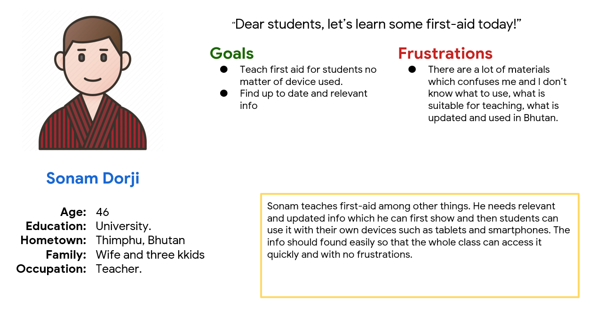
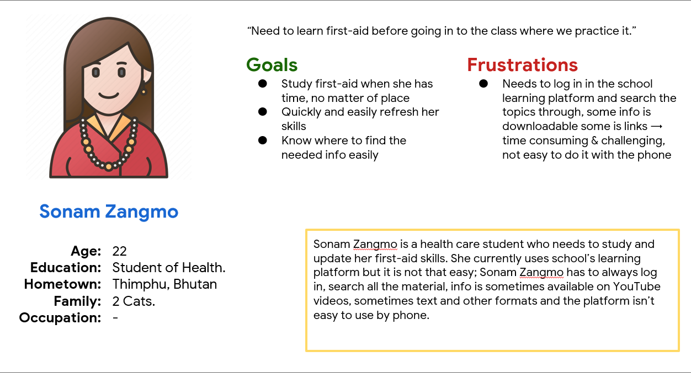

User Research
Pain Points
The pain points that i have found are
- Lack of a first-aid training app.
- Easier accesbility on mobile devices.
- Design a minimal style user interface
First-aid is a mobile app which provides first-aid instructions. Primarily targets users who are students and teachers.
For teachers it is hard to teach first-aid because info is not always relevant and updated. Also info must be available on devices such as a phone for easy accesbility.
Role: UX designer leading the app design from conception to delivery.
Responsibilities:Research,wireframing(paper&digital), prototyping, conducting usability studies, accounting the accessibility and iterating on designs.
Design an app where tests and info can be found easily and quickly. Is suitable for teachers and students purposes.
The pain points that i have found are
 
I did a quick ideation exercise (Crazy Eights) to come up with ideas for how to address gaps identified in easy and meaningful user experience.
After ideating and drafting some paper wireframes, I created the initial designs for the First-aid app. These designs focused on easy and quick action while using the app.
To prepare for usability testing, I created a low-fidelity prototype which included the main user flow of the app.

These usability studies were essential for understanding how real users experience and perceive my designs. The research findings helped me to iterate and improve my design to meet users' needs.
Conducted usability study only with wireframes and not with mockups. Added an arrow to indicate there is more content.
The high-fidelity prototype followed the same user flow as the low-fidelity prototype.
To make the app more accessible I:
Impact
What I learned?
Moving forward, I will: